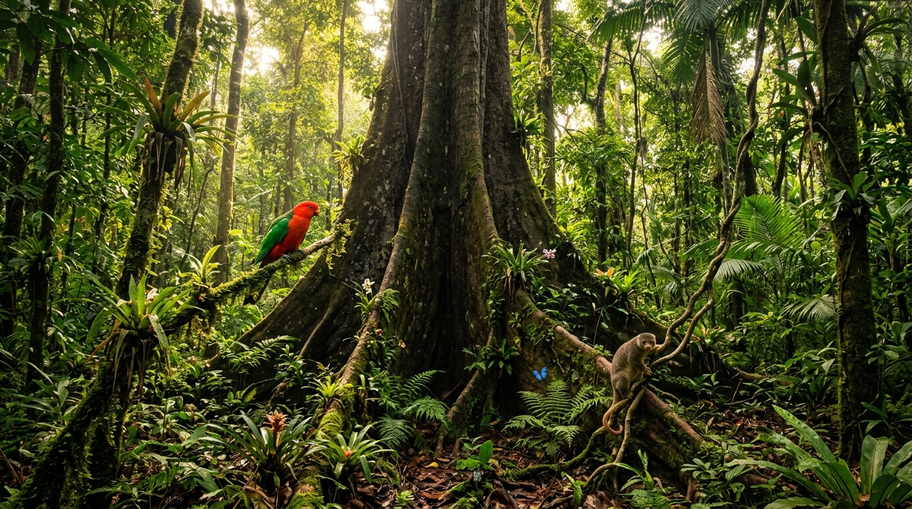

Canarium indicum — Maluku, The Spice Islands of Indonesia
NATSEPA brings you the rarest nut on earth — wild-harvested from ancient rainforests, never cultivated, cracked by hand, and roasted with generations of knowledge. One harvest. One year. Infinite care.
The Canarium indicum — locally called Kenari — is a nut endemic to the rainforests of Maluku, Eastern Indonesia. Unlike walnuts or almonds, it has never been commercially cultivated. It grows wild, on trees that can live for hundreds of years, reaching 45 meters tall.
Harvested just once a year using traditional bamboo tools called poga-poga, by families who have guarded these forests for generations. Every nut carries a piece of Maluku's living heritage.
Scientific name — endemic to Maluku's volcanic soil, also known as Galip, Ngali, or Nangai nut in Pacific regions.
Grows naturally in primary rainforests without any pesticides, fertilizers, or irrigation. A true gift from nature.
Dominated by heart-healthy oleic acid (~45–50%), comparable to the best-grade extra-virgin olive oil.

Five steps. One year. One ancient forest. Each NATSEPA product carries this complete journey.
Gathered once a year from primary rainforests using traditional poga-poga bamboo tools. No trees are cut. Nature's cycle is respected.

Only premium-grade kernels pass inspection. Local community women hand-sort every batch for size, color, and freshness.

Each hard shell is opened using traditional tools and skilled hands, preserving the natural oils and integrity of every kernel.

Roasted and seasoned with local ingredients — garlic, wild honey, arengga sugar — using generations-old recipes passed down in Maluku.

Packed with strict quality control — Halal-certified, BPOM registered — from Maluku to the world. HS Code: 2008.19.91

The Kenari tree has been part of Maluku life since before colonial times. When the VOC monopolized cloves and nutmeg, it was the Kenari that saved Maluku families — becoming the "pohon kehidupan" (tree of life). Today, NATSEPA honors this legacy.
"From Maluku's ancient forests to your hands — every nut is a testament to centuries of life, wisdom, and the resilience of our people."Read Our Story
 Savory
Savory
Wild-harvested Canarium kernels slow-roasted with fragrant Maluku garlic. Bold, savory, and utterly addictive.
 Crunchy
Crunchy
Clusters of whole Kenari kernels with a satisfying crunch. A unique texture experience unlike any nut product you've tried.
 Sweet
Sweet
Glazed with pure local wild honey — naturally sweet, deeply satisfying. A timeless pairing of forest nut and forest honey.
 🏆 Award
🏆 Award
Glazed with traditional palm sugar (Arengga), this award-winning variant delivers a rich caramel depth unique to Indonesian heritage.
HS CODE: 2008.19.91 · HALAL CERTIFIED · BPOM REGISTERED
Canarium is native to Maluku and cannot be cultivated anywhere else in the world. Ecologically unique — scientifically confirmed.
Harvested from primary rainforest without cutting trees. Fallen fruits are left to grow new seedlings. Net positive for ecosystems.
Every step involves skilled local hands, traditional tools, and generations-deep knowledge. No machine can replicate this.
Processed and packed in Maluku — empowering local communities and keeping the economic value where it belongs.
66% healthy unsaturated fats, 14% protein, Vitamin E, Omega-3, plus essential minerals — all naturally occurring, no additives.
From the Spice Islands' colonial era to today — the Kenari has been the "tree of life" for Maluku families for centuries.
Order directly via WhatsApp for the freshest batch. We ship nationwide across Indonesia and internationally via HS Code 2008.19.91.
Chat & Order on WhatsApp